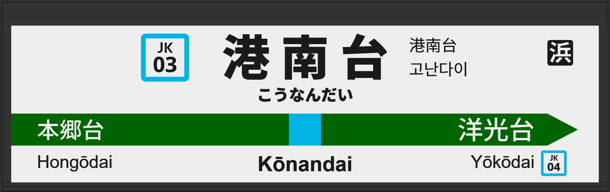

| ←本郷台 | ■ 京浜東北線 | 洋光台→ |
|---|
1998年7月に初期型ATOS放送を導入。
2006年2月に旧型に更新され、接近放送の文面が「黄色い線まで～」になる。
2012年6月に発車メロディが1番線は「Verde Rayo（遅テンポ）」から「Verde Rayo（低音強調）」へ、2番線は「Water Crown」から「Water Crown（低音）」に変更される。
2013年3月に常磐改良型に更新される。
2025年5月には1番線の発車メロディが「JRE-IKST-007-2」へ、2番線が「JRE-IKST-007-1」に変更されています。
| 1 | ■ 京浜東北線 大船方面 |
1番線次発予告 1番線接近放送 1番線到着放送 |
初期型で、接近放送の文面が「黄色い線の内側まで～」でした。 放送は「」です。 |
|---|---|---|---|
| 2 | ■ 京浜東北線 大宮方面 |
2番線次発予告 2番線接近放送 2番線到着放送 |
初期型で、接近放送の文面が「黄色い線の内側まで～」でした。 放送は「」です。 |
| 1 | ■ 京浜東北線 大船方面 |
1番線次発予告 1番線接近放送 |
文面がさらに継ぎ接ぎでした。 放送は「各駅停車 大船行」です。 |
|---|---|---|---|
| 2 | ■ 京浜東北線 大宮方面 |
2番線次発予告 2番線接近放送 |
文面がさらに継ぎ接ぎでした。 放送は「各駅停車 南浦和行」です。 |